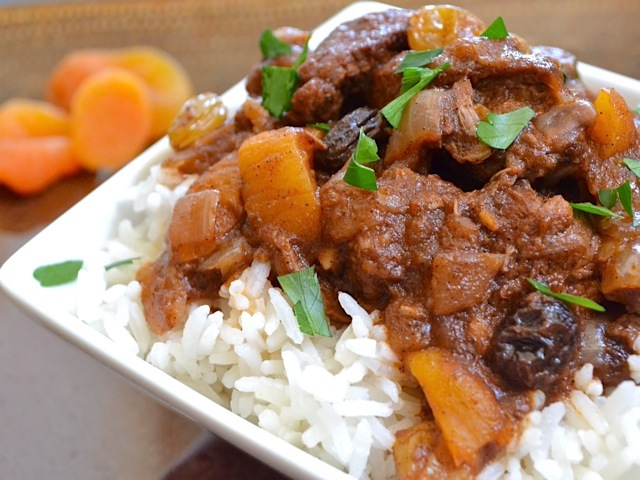

Moroccan Beef Stew

Ingredients for Beef Stew
- 2 Tbsp olive oil ($0.22)
- 1 1/2 lbs. beef stew meat ($6.97)
- 1 medium yellow onion ($0.76)
- 2 inches fresh ginger ($0.33)
- 1/2 Tbsp minced garlic ($0.12)
- 1/2 Tbsp allspice ($0.07)
- 1/2 Tbsp cinnamon ($0.07)
- 1 cup red wine, optional ($2.52)
- 3 oz. tomato paste ($0.28)
- 1 Tbsp honey ($0.11)
- 1/4 tsp. crushed red pepper ($0.02)
- 1/2 tsp salt ($0.02)
- 3 cups water ($0.00)
- 7 whole dried apricots ($0.62)
- 1/4 cup raisins ($0.14)
- 1 1/2 cups dry jasmine rice ($0.72)
Instructions for Beef Stew
-
Heat the olive oil in a large pot over medium high heat. When the
oil is very hot (but not smoking), add the beef. Cook the beef
until it is well browned and all of the juices have cooked off
(about 15 minutes).
-
While the beef is cooking, dice the onion. Peel the ginger with a
vegetable peeler or scrape the skin off with a spoon and then
grate about 2 inches on a cheese grater. Add the onion, ginger,
and minced garlic to the pot with the beef and cook until tender
(about 5 minutes).
-
Add the allspice and cinnamon to the pot. Stir and cook for about
one minute. Add the red wine to deglaze the bottom of the pot. If
you’re not using wine, the water in the next step will do the
same.
-
Add the water, the tomato paste, honey, crushed red pepper, and
salt. Give everything a good stir to dissolve the tomato paste.
Let it come up to a boil then reduce the heat to low, place a lid
on top, and let it simmer for one hour.
Recipe Instructions:
-
While the stew is simmering, cook the jasmine rice. Add the dry
rice and 3 cups of water to a medium pot. Bring it up to a boil
with a lid in place. As soon as it reaches a rolling boil, reduce
the heat to the lowest setting and let simmer for 20 minutes.
After 20 minutes, turn the heat off and let the pot sit,
undisturbed, until you are ready to serve.
-
When the stew has simmered for about an hour, roughly chop the
apricots and add them to the stew along with the raisins. Let the
stew simmer for another 15-20 minutes without a lid to allow it to
thicken. You may need to increase the heat just slightly to keep
it simmering without the lid to hold the heat in.
-
Fluff the rice with a fork, pile some into a bowl, and then ladle
the stew on top. Enjoy!